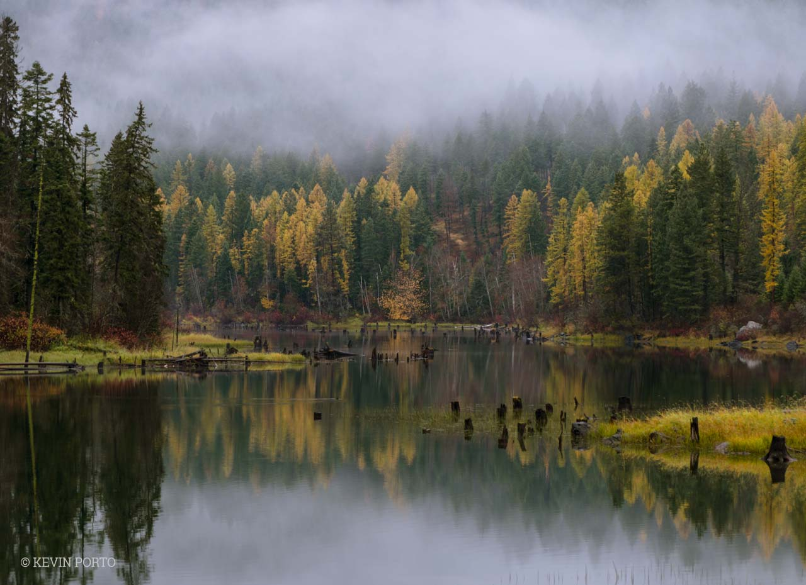

Autumn in the Flathead Valley is easily one of the most beautiful places in Montana. Although Bigfork is a smaller town in Flathead County, the trees that were once a vibrant green now begin to turn into illuminating golds and coppers. There is no other place quite as beautiful as Bigfork, and especially during the fall.
Everyone praises summer for being so warm and sunny, but I actually prefer the colder and more overcast seasons, including autumn. Because Bigfork is such a big tourist location, autumn has always symbolized peace; all the visitors have gone home and the town is quiet and relaxed once again.